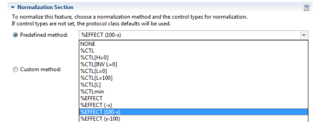

In Phaedra, well feature values can be normalized. They are transformed into values that are relative to the plate's control wells, and allow easier comparison against values from other plates.
Normalization methods are specified in the protocol class editor, by selecting a feature and selecting a normalization in the list of available methods.

The predefined methods that are available in Phaedra are listed below.
| %EFFECT | |
|---|---|
 | |
| %EFFECT (-x) | |
| %EFFECT (x-100) | |
 | |
| %EFFECT (100-x) | |
| %CTL | Robust percent of high control with 0% = 0, 100% = HC |
 | |
| %CTL[H=0] | Robust percent of high control with 0% = HC, 100% = 0 |
| %CTL[L] | |
 | |
| %CTL[L=0] | |
| %CTL[L=100] | Robust percent of low control with 0% = 0, 100% = LC |
| %CTL[INV L=0] | Robust percent of low control with 0% = LC, 100% = 0 |
| %CTLmin | |
 | |
| Sigma[H] | |
 | |
| Sigma[L] | |
| PIN[Pos Mean] | Positive percent inhibition based on mean of controls |
| PIN[Pos Median] | Positive percent inhibition based on median of controls |
| PIN[Neg Mean] | Negative percent inhibition based on mean of controls |
 | |
| PIN[Neg Median] | Negative percent inhibition based on median of controls |
 | |
| ZScore[S/L] | Z-score based on samples and low controls |
| ZScore[L] | Z-score based on low/negative controls |
| ZScoreRob[S/L] | Robust Z-score based on samples and low controls |
 | |
| ZScoreRob[L] | Robust Z-score based on low/negative controls |
Note: While custom normalization methods are supported, they should be used with great care. Contact a Phaedra administrator before setting a custom normalization formula.